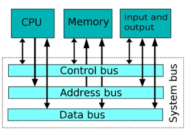
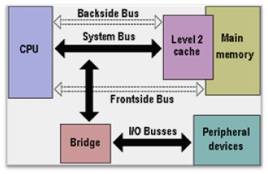

1. Terangkan apa yang dimaksud dengan Bus System Jawab:
Sistem Bus adalah sebuah struktur yang terdiri dari bebarapa komponen dan bus sebagai alat penghubung antar komponen dengan procedure/fungsi-fungsi tertentu. System bus merujuk pada bus yang digunakan oleh sistem komputer untuk menghubungkan semua komponennya dalam menjalankan tugasnya. Sebuah bus adalah sebutan untuk jalur di mana data dapat mengalir dalam komputer. Jalur-jalurini digunakan untuk komunikasi dan dapat dibuat antara dua elemen atau lebih. Data atau programyang tersimpan dalam memori dapat diakses dan dieksekusi oleh CPU melalui perantara sistem bus.
Bus System dapat dibedakan atas:
1. Data Bus ( Saluran Data )
2. Address Bus ( Saluran Alamat )
3. Control Bus ( Saluran Kendali )

2. Apakah perbedaan antara FSB dan BSB Jawab:
FSB (Front Side Bus) adalah jalur (bus) yang secara fisik menghubungkan prosesor dengan chipset northbridge dan sebagian besar komponen lain seperti memori utama (RAM), hard drive, dan PCI pada motherboard.
Jalur ini sebagai tempat lintasan data/informasi yang diwujudkan dalam bentuk sinyal-sinyal elektronis. Jalur ini merupakan jalur dua arah, artinya aliran data/informasi bisa berjalan dari prosesor menuju motherboard atau sebaliknya. FSB juga menghubungkan processor dengan memori utama.
BSB (BackSide Bus) adalah sebuah bus yang terdapat dalam chip prosesor, yang khusus menghubungkan ALU dan L2 cache internal, sehingga aliran data dari L2 cache terjadi lebih cepat dan mampu mengurangi kemungkinan terjadinya bottleneck (kemacetan aliran data). Biasanya, aliran data melalui backside bus lebih cepat dibandingkan front side bus. Kecepatan cache memory setara dengan prosessor karena cache memory merupakan contoh SRAM.

3. Terangkan apa yang dimaksud dengan DSB dan SSB Jawab:
SSB atau Single Sideband merupakan penyempurnaan dari modulasi amplitudo yang menggunakan kekuatan pemancar dan bandwidth lebih efisien. Modulasi amplitudo menghasilkan sinyal output yang memiliki dua kali bandwidth sinyal baseband asli. Single-sideband modulation menghindari penggandaan bandwidth, dan daya yang terbuang pada pembawa. Sementara DSB atau double sideband adalah jenis modulasi amplitudo dimana spektrum frekuensi carrier di tekan mendekati nol.
4. Apakah yang dimaksud dengan Embedded System Jawab:
Embedded system atau sistem tertanam merupakan sistem komputer khusus yang dirancang untuk menjalankan tugas tertentu dan biasanya sistem tersebut tertanam dalam satu kesatuan sistem. Kata embedded menunjukkan bagian yang tidak dapat berdiri sendiri. Berbeda dengan sistem digital yang didesain untuk general purpose. Embedded system biasanya diimplementasikan dengan menggunakan mikrokontroler, sistem embedded dapat memberikan respon yang sifatnya real time dan banyak digunakan pada peralatan digital, seperti jam tangan. Sistem Tertanam mempunyai 3 komponen penting yaitu :
a. Memiliki Perangkat Hardware.
b. Memiliki Firmware dan Software.
c. Memiliki sistem operasi
5. Suatu CPU memiliki address bus yang dimiliki (A0-A23) tentukanlah jumlah alamat yang dapat diakses oleh CPU tersebut Jawab :
CPU dengan address bus (A0-A23) memiliki address bus sebanyak 24 buah, maka kapasitas memory sebesar 224 = 210 x 210 x 24 = 1K x 1K x 16 = 16Megabyte.
6. Tentukanlah jumlah address bus yang dimiliki oleh sebuah CPU dengan kapasitas 2 giga Jawab :
2 Giga = 1K x 1K x 1K x 2 = 210 x 210 x 210 x 21 = 231.
7. Terangkan apa yang dimaksud dengan Chipset! Jawab :
Chipset merupakan kumpulan dari IC yang ukurannya sangat kecil yang sering disebut sebagai chips. Chips ini saling bekerjasama antara satu dengan lainnya agar dapat menunjang kinerja perangkat keras komputer. Selain itu, chipset sendiri bertindak sebagai layaknya polisi lalu lintas yang tugasnya mengarahkan aliran data serta menentukan perangkat mana saja yang didukung personal komputer.
Chipset memiliki fungsi mengatur lalu lintas data yang ada di daam komputer. Misalnya saja, chipset bertugas untuk mengarahkan data dari CPU (processor) untuk menuju perangkat lain seperti kartu VGA atau RAM. Chips terdapat di dalam Motherboard, dan di dalam Motherboard itu ada banyak sekali Chips yang salin terhubung. Bila satu Chips rusak, maka hampir bisa dipastikan komputer tidak akan bisa digunakan.
8. Terangkan apa yang dimaksud dengan Bridge dalam context arsitektur komputer! Jawab :
Bridge yang merupakan alat untuk menghubungkan dua buah jaringan komputer LAN yang saling terpisah. Melalui Bridge ini, tiap user di kedua jaringan komputer LAN tersebut bisa saling berkomunikasi dan bertukar data. Selain fungsi dasar tersebut, Bridge juga memiliki fungsi lainnya seperti:
Menghubungkan 2 Jaringan LAN yang Terpisah Jarak
Memudahkan Mengelola Jaringan Sendiri
Mengurangi Beban Jaringan
9. Terangkan apa yang dimaksud dengan ISA (Industrial Standard Architecture)! Jawab :
ISA adalah bus data selebar 8-bit yang diperkenalkan dalam IBM PC 5150 pada tanggal 12 Agustus 1981.ISA adalah teknologi antarmuka untuk menghubungkan perangkat komputer yang sudah mulai ditinggalkan. Perangkat komputer yang menggunakan ISA diantaranya modem dan sound card.
10. Terangkan apa yang dimaksud dengan PCI (Pheripheral Component Interconnect)! Jawab :
Pengertian PCI (Peripheral Component Interconnect) adalah bus yang didesain untuk menangani beberapa perangkat keras. PCI juga adalah suatu bandwidth tinggi yang populer, prosesor independent bus itu dapat berfungsi sebagai bus mezzenine atau bus periferal. Standar bus PCI ini dikembangkan oleh konsorsium PCI Special Interest Group yang dibentuk oleh Intel Corporation dan beberapa perusahaan lainnya, pada tahun 1992. Tujuan dibentuknya bus ini adalah untuk menggantikan Bus ISA/EISA yang sebelumnya digunakan dalam komputer IBM PC atau kompatibelnya.